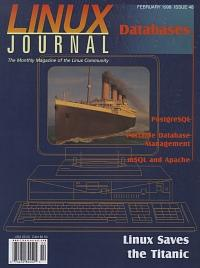

Shutdown Archive web server
Search:
Linux Journal
Issue #46/February 1998

Features
PostgreSQL—The Linux of Databases
by Rolf Herzog
A close look at the PostgreSQL database, including programming interfaces and using it for WWW applications.
The Qddb Database Suite
by Eric H. Herrin, II and Gilbert J. Benson, Jr.
An introduction the freely available database suite called Qddb.
Beagle SQL, A Client/Server Database for Linux
by Rob Klein
Mr. Klein introduces us to a database called Beagle SQL that he developed as a learning experience.
Portable Database Management with /rdb
by Ed Petron
Web server analysis logs and mailing list management is made easy by using the /rdb database system—here's how to do it.
News & Articles
Linux Network Programming, Part 1: BSD Sockets
by Ivan Griffin and John Nelson
This is the first of a series of articles about how to devlop networked applications using the various interfaces available on Linux.
Linux Helps Bring Titanic to Life
by Darryl Strauss and Wook
First article in a two part series on using Linux for visual effects in “Titanic”. This article will focus on the technical aspects of the project.
The Quick Start Guide to the GIMP, Part Four
by Michael J. Hammel
Our series winds up with a detailed description of the toolbox, plug-ins and keyboard acceleration.
A Partner's Survival Guide
by Telsa Gwynne
A view of life with a hacker brought to us by a mischievous spouse who should know—Ms. Gwynne is married to Alan Cox.
by Craig Oda
Tokyo Linux Users Group Grows Up
Reviews
Personal Empress Database
by David Weis
Review of personal Empress RDBMS for Linux.
S.u.S.E. V5.0
by Stuart Green
The Essential Perl Books
by Eric Raymond
WWWsmith
Web Counting with mSQL and Apache
by Randy Jay Yarger
Learn all about Apache modules and mSQL programming using a web counting program as an example.
Linux Works for Me and You
by Maan Bsat
A high school student tells us about using Linux as a server at school, at home and at work.
At the Forge
Attaching Files to Forms
by Reuven M. Lerner
Mr. Lerner shows us a way to use file elements to allow web site visitors to upload information or program files to the site.
Columns
Letters to the Editor
From the Editor
Databases
by Marjorie Richardson
From the Publisher
Needed: Linux Banking Software
by Phil Hughes
Stop the Presses
COMDEX/Fall '97
by Carlie Fairchild
Linux Apprentice
Setting Up E-mail
by Jonathan Walther
Setting Up E-mail This article will give you a properly working e-mail setup and an overview of various pieces of e-mail software.
Take Command
ispell: Spelling Checker
by Marjorie Richardson
ispell: Spelling Checker Don't know how to spell? This is the command for you.
Linux Means Business
United Railway Signal Group, Inc.
by Lester Hightower and Hank Leininger
United Railway Signal Group, Inc. The story of how Progressive Computer Concepts has turned United Railway into a Linux shop.
New Products
Best of Technical Support
Archive Index
Shutdown Archive web server
Search:
Copyright © 1994 - 2018
Linux Journal
. All rights reserved.